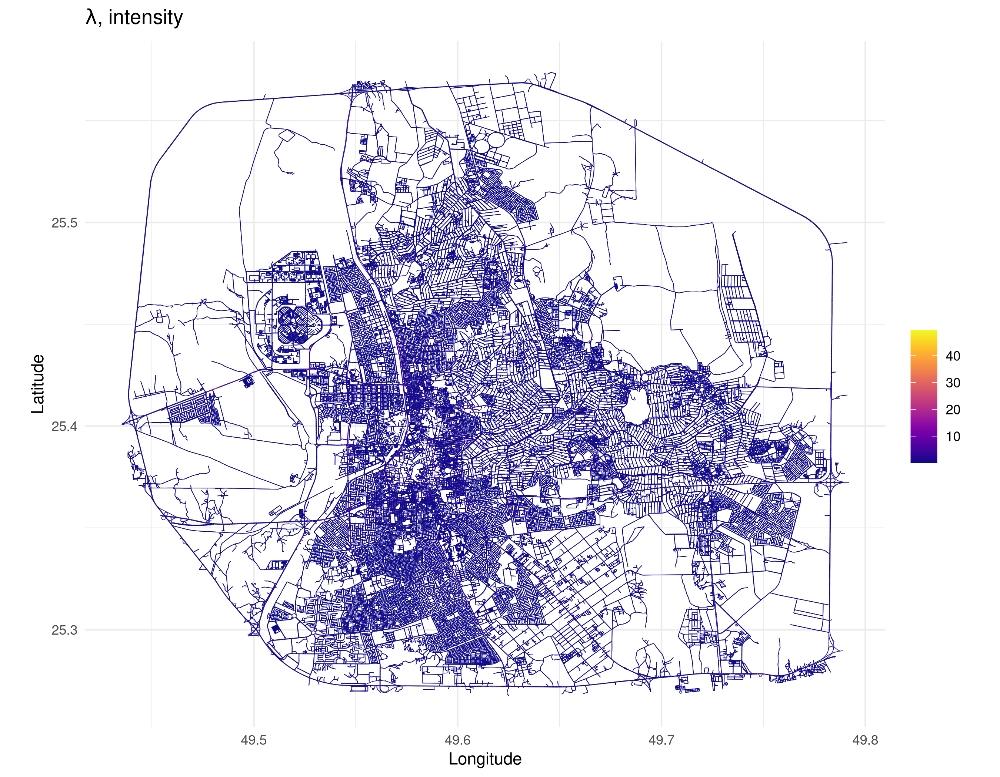

In this section, we fit Model 1 as described in the paper. This model includes only spatial effects, without any covariates.
This part loads the required libraries, reads the data and graph files, and builds a mesh using the graph structure. The operations prepare the spatial framework needed for the subsequent modeling steps.
library(MetricGraph)
library(INLA)
library(qs)
library(ggplot2)
# Load Graph
data <- qread("Data/data_all_reasons_with_distances_7FRC.qs")
graph <- qread("Data/graph_mesh_pruned_100m_7FRC_ver2.qs")
summary(graph)
# Note that this graph already has the observation to vertex
graph$build_mesh(h = 0.1)
# Extract the data
ss <- graph$get_data()
dat <- ss
ind.dat <- graph$PtV
graph$clear_observations()
system.time(graph$compute_fem())
n_accidents <- sum(!is.na(ss$AccidentSeverityId)) # 2482 - total number of accidentsBefore fitting the model, we prepare the spatial observations by defining integration points and associating them with the mesh. This segmentation allows the model to differentiate between observed locations and additional integration nodes.
alpha <- 1
atilde <- graph$mesh$weights
# These are the indices of the mesh nodes which are not observation locations
ind.add <- setdiff(1:length(atilde), ind.dat)
# Add the locations which are observed
graph$add_observations(
data = data.frame(
y = rep(1, length(ind.dat)),
e = atilde[ind.dat],
edge_number = dat$.edge_number,
distance_on_edge = dat$.distance_on_edge
),
normalized = TRUE
)
# Add the remaining integration points
graph$add_observations(
data = data.frame(
y = rep(0, length(ind.add)),
e = atilde[ind.add],
edge_number = graph$mesh$VtE[ind.add, 1],
distance_on_edge = graph$mesh$VtE[ind.add, 2]
),
normalized = TRUE
)Here we build the graph_spde model using the prepared
spatial data. The subsequent code stacks the data and fits a
log-Gaussian Cox process without covariates. You can choose between 2
different parameterizations: “spde” or “matern”. We will use the “spde”
parameterization in this example. In case if you want to use the
“matern” parameterization, you can change the parameterization argument
in the graph_spde function and use the code snippet
provided in the comments to convert back to “spde” parameterization.
# Create the Graph_SPDE model
# Parametrization can either be "spde" or "matern"
system.time(spde_model1 <- graph_spde(graph, alpha = alpha, parameterization = "spde", verbose = 1))
data_spde <- graph_data_spde(graph_spde = spde_model1, name = "field")
stk1_no_repl <- inla.stack(
data = data_spde[["data"]],
A = data_spde[["basis"]],
effects = c(
data_spde[["index"]],
list(Intercept = 1)
),
tag = "data"
)
spde_fit1_no_repl <- inla(y ~ -1 + Intercept + f(field, model = spde_model1),
family = "poisson", data = inla.stack.data(stk1_no_repl),
control.predictor = list(A = inla.stack.A(stk1_no_repl)),
control.compute = list(config = TRUE), # Necessary for the computation of the excursion sets
E = inla.stack.data(stk1_no_repl)$e
)
spde_result <- spde_metric_graph_result(spde_fit1_no_repl, "field", spde_model1)
alpha <- 1
nu <- alpha - 0.5
kappa <- sqrt(8 * nu) / range
tau <- sqrt(gamma(nu) / (sigma^2 * gamma(alpha) * sqrt(4 * pi) * kappa^(2 * nu)))
# For "spde" parameterization
result_df <- data.frame(
parameter = c("kappa", "tau"),
mean = c(
spde_result$summary.kappa$mean,
spde_result$summary.tau$mean
),
mode = c(
spde_result$summary.kappa$mode,
spde_result$summary.tau$mode
)
)
print(result_df)
# For "matern" parameterization
result_df <- data.frame(
parameter = c("sigma", "range"),
rspde_version = c(sigma, range),
mean_exact = c(
spde_result$summary.sigma$mean,
spde_result$summary.range$mean
),
mode_exact = c(
spde_result$summary.sigma$mode,
spde_result$summary.range$mode
)
)
print(result_df)
# Plotting the posterior distribution of the parameters
posterior_df_fit <- gg_df(spde_result)
ggplot(posterior_df_fit) +
geom_line(aes(x = x, y = y)) +
facet_wrap(~parameter, scales = "free") +
labs(y = "Density")
save.image("Data/5Fit_model1_alpha1_exact_100m.RData")The final section extracts and visualizes the model’s predictions, including the intensity and latent field. Several plotting styles are applied, and the plots are saved as image files for further review.
###### Extracting results ######
# summary.random - contains the posterior mean of the unstructured random effect, u(s)
# summary.fitted.values - contains the predicted intensity (mean number of events per unit area), lambda
# summary.linear.predictor - contains the posterior mean of the linear predictor, log(lambda)
library(scico)
library(gridExtra)
library(ggplot2)
library(gridExtra)
library(viridis)
# Function to plot and save results
plot_and_save_results <- function(fit_object, graph, stk, file_prefix) {
# Extracting intensity results
index <- inla.stack.index(stk, tag = "data")$effect
lambda_mean <- fit_object$summary.fitted.values[index, "mean"]
#### Intensity Plot Variations ####
# Colormap 1: vik with white background (scico + theme_minimal)
png(paste0(file_prefix, "_intensity_vik_minimal.png"), height = 3 * 700, width = 3 * 900, res = 300)
p_vik_minimal <- graph$plot_function(X = exp(lambda_mean), vertex_size = 0, edge_width = 0.2, scale_color = scale_color_scico(palette = "vik", midpoint = 0, begin = 0.1)) +
ggtitle(expression(paste(lambda, ", intensity"))) +
theme_minimal()
print(p_vik_minimal)
dev.off()
# Colormap 2: viridis
png(paste0(file_prefix, "_intensity_viridis.png"), height = 3 * 700, width = 3 * 900, res = 300)
p_viridis <- graph$plot_function(X = exp(lambda_mean), vertex_size = 0, edge_width = 0.2, scale_color = scale_color_viridis(option = "D", direction = 1)) +
ggtitle(expression(paste(lambda, ", intensity"))) + theme_minimal()
print(p_viridis)
dev.off()
# Colormap 4: plasma (viridis)
png(paste0(file_prefix, "_intensity_plasma.png"), height = 3 * 700, width = 3 * 900, res = 300)
p_plasma <- graph$plot_function(X = exp(lambda_mean), vertex_size = 0, edge_width = 0.2, scale_color = scale_color_viridis(option = "plasma", direction = 1)) +
ggtitle(expression(paste(lambda, ", intensity"))) + theme_minimal()
print(p_plasma)
dev.off()
#### Latent Field Plot Variations ####
u_posterior_mean <- fit_object$summary.random$field[["mean"]]
png(paste0(file_prefix, "_posterior_u.png"), height = 3 * 700, width = 3 * 900, res = 300)
p1 <- graph$plot_function(X = u_posterior_mean, vertex_size = 0, edge_width = 0.1, scale_color = scale_color_scico(palette = "vik", midpoint = 0)) +
ggtitle(expression(~u)) + theme_minimal()
print(p1)
dev.off()
#### Log-Intensity Plot ####
log_lambda <- fit_object$summary.linear.predictor[index, "mean"]
png(paste0(file_prefix, "_log_intensity2.png"), height = 3 * 700, width = 3 * 900, res = 300)
p32 <- graph$plot_function(X = log_lambda, vertex_size = 0, edge_width = 0.2, scale_color = scale_color_scico(palette = "vik", midpoint = 0)) +
ggtitle(expression(~ log(lambda))) + theme_minimal()
print(p32)
dev.off()
}
plot_and_save_results(spde_fit1_no_repl, graph, stk1_no_repl, "Figures/5Graph_model1_alpha1_7FRC_pruned_exact_100m")The model results are visualized in the following plots:
Intensity Plot Variations:
Colormap 1: vik (scico)
Colormap 2: viridis
Colormap 4: plasma (viridis) 
Latent Field Plot Variations:
Log-Intensity Plot: